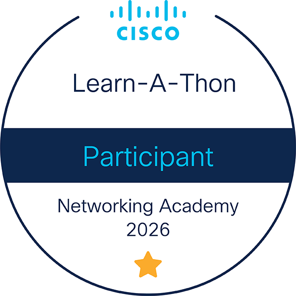

GIOMAR HUACHO
Técnico de Sistemas Microinformáticos y Redes | Soporte, Hardware & Redes
Perfil Profesional
Técnico con dominio en redes (Cisco/VLSM/seguridad) y experiencia práctica en banco de pruebas de hardware y gestión RMA. Perfil autodidacta, analítico y altamente resiliente ante problemas complejos. Metódico, con gran autonomía y vocación por el soporte técnico y el aprendizaje colaborativo.
Experiencia Laboral
Técnico de Hardware y Logística (Prácticas) | Life Informática
Agosto 2026 – Presente- Logística y almacén: Recepción de mercancía, empaquetado y preparación de cajas, control de stock y registro diario de entradas y salidas de material en el sistema informático de la empresa.
- Apoyo técnico en taller: Pruebas en banco de trabajo revisando placas base (Intel y AMD) que no encienden o fallan al arrancar, comprobación de monitores y gestión de devoluciones y garantías.
Proyectos Técnicos
- Asistente Virtual con IA: Chatbot local ejecutado sobre la GPU para respuestas fluidas, interfaz interactiva y memoria en la nube.
- Control y Rendimiento de Hardware: Desarrollo de scripts para regular curvas de ventilación y monitorizar temperaturas en tiempo real.
- Portafolio Web Personal: Maquetación responsiva moderna desplegada en GitHub Pages para exponer proyectos técnicos.
Competencias Técnicas
Redes y Conmutación
Cisco Packet Tracer, cálculo de subredes VLSM, configuración de VLANs, enlaces troncales y seguridad en puertos.
Diagnóstico Físico y Taller
Detección de cortocircuitos con multímetro, revisión de etapas de potencia VRM y montaje en banco de pruebas.
Seguridad y Enrutamiento
Configuración OPNsense, reglas de filtrado de tráfico, gestión de DHCP y administración de routers.
Sistemas Operativos y Terminal
Administración de Linux (CachyOS, Arch) y Windows Server, usuarios, permisos y comandos de terminal.
Pruebas de Hardware y Garantías
Verificación funcional de placas base Intel y AMD, banco de pruebas para monitores y logística de taller.
Scripts y Rendimiento
Automatización de scripts para optimizar el equipo, control térmico, calibración de ventiladores y ajustes gráficos.
Insignias Oficiales Cisco

CCNA: Introducción a las redes
Learn-A-Thon · 2026

Analista Junior en Ciberseguridad
Career Path · 2026